1대시보드 입장
5단계로 끝납니다. 강사 토글 확인 → 대시보드 → 수업 관리 → 클래스 상세 → Google Meet 입장.
aity.co.kr 메인에서 우측 상단 토글이 "강사"로 되어 있는지 확인하세요. "수강생"으로 되어 있으면 토글을 눌러 강사로 전환합니다.
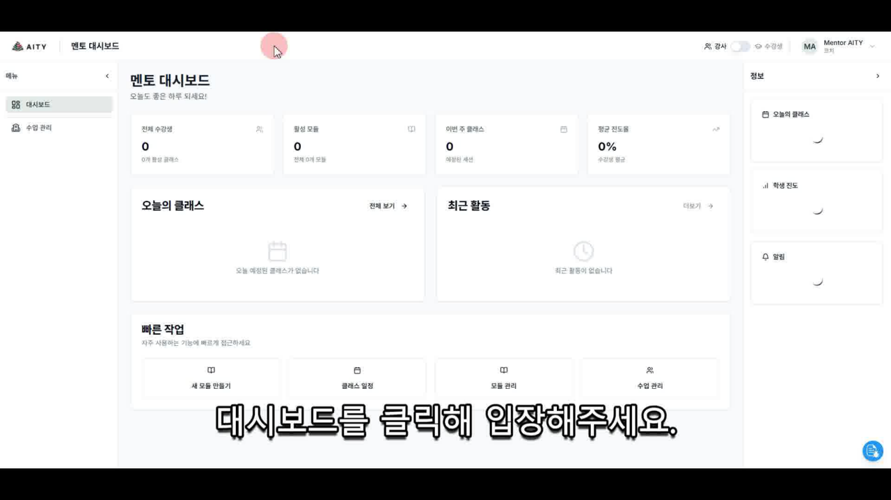
상단 메뉴 "대시보드" 클릭 → 좌측 메뉴 대시보드 / 수업 관리 두 가지가 핵심입니다. 우측에는 오늘의 클래스, 학생 진도, 알림이 위젯으로 표시됩니다.
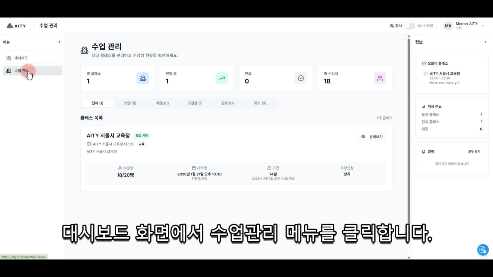
좌측 메뉴 "수업 관리"를 클릭하면 담당 클래스 목록이 보입니다. "전체 / 초안 / 예정 / 모집중 / 완료 / 취소" 탭으로 필터링할 수 있습니다.
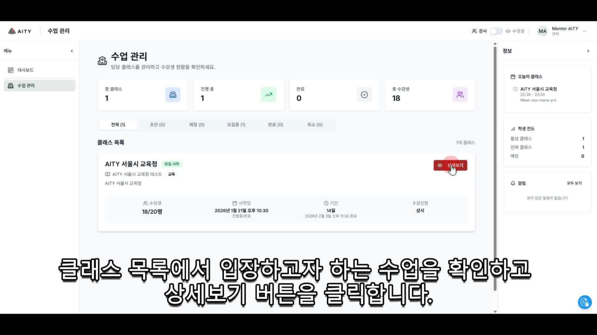
본인이 진행할 클래스의 우측 "상세보기" 버튼을 클릭. 개요 / 커리큘럼 / 출석 관리 / 녹화본 / 설문 응답 / 게시판 탭이 보입니다.
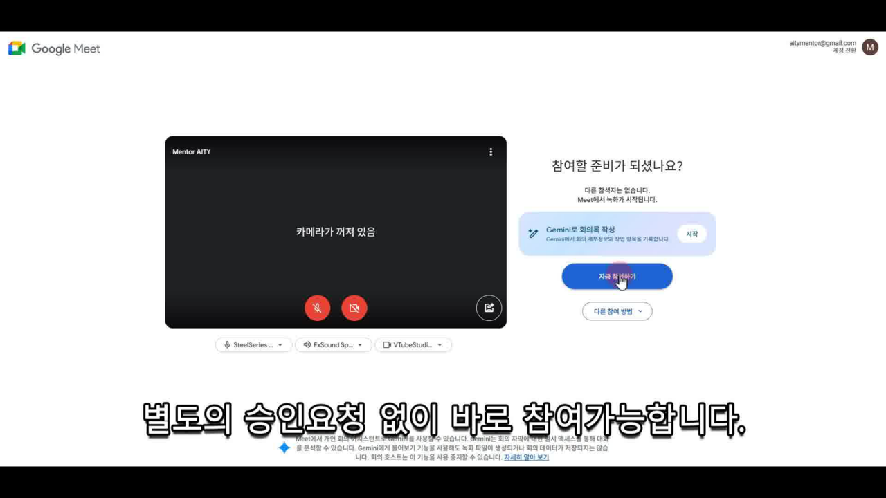
우측 상단 검정 버튼 "📹 Google Meet 입장" 클릭. 별도 승인 요청 없이 바로 Meet으로 이동됩니다.
2입장 시 본인 계정 확인
Meet 화면 우측 상단의 이메일이 강사 본인 계정인지 항상 확인하세요. 신청 시 등록한 계정과 다르면 입장 시 승인 요청이 발생합니다.
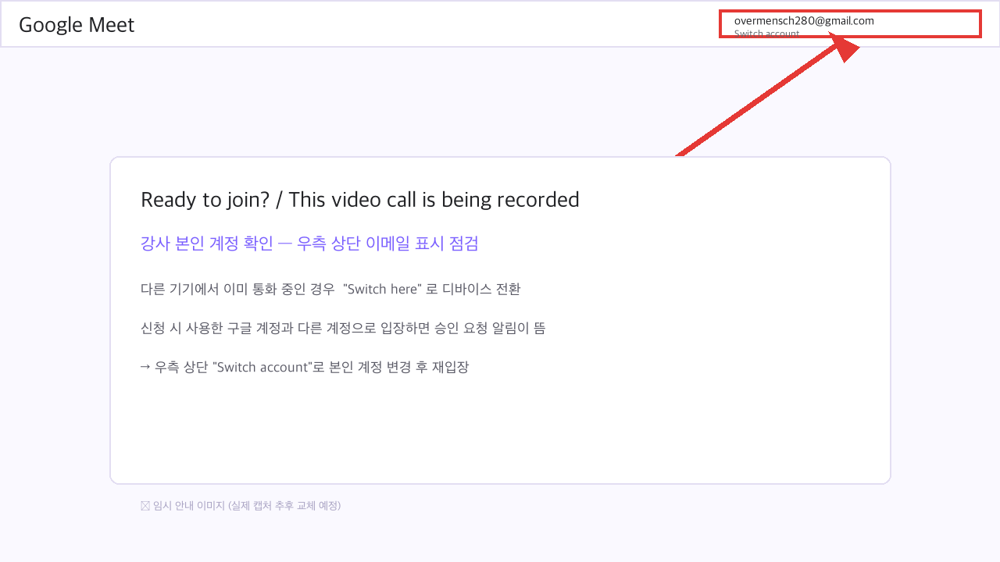
다른 기기에서 이미 통화 중이면 "Switch here" 로 디바이스 전환. 다른 계정으로 입장된 상태면 우측 상단 "Switch account" 로 본인 계정 변경 후 재입장.
3수업 운영 & 녹화
Meet 입장 직후 자동으로 녹화가 시작되는지 확인하는 게 가장 중요합니다.
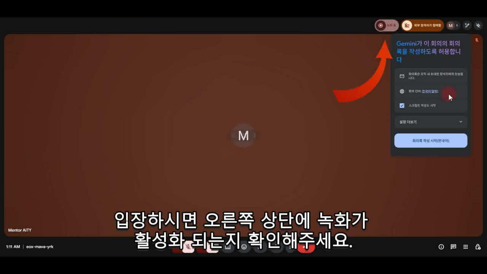
Meet 입장하면 우측 상단에 빨간 점 + "녹화 중" 표시가 뜹니다. Gemini가 회의록 작성을 시작한다는 알림도 함께 표시됩니다.
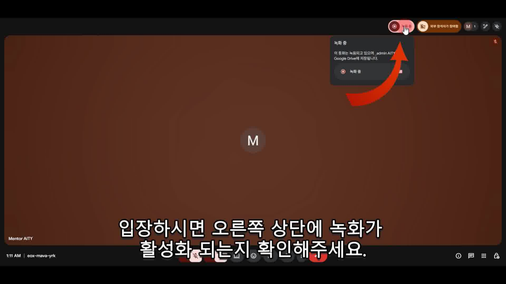
"녹화 중" 텍스트가 보이면 정상. 클릭하면 녹화 상세(저장 위치 등)를 확인할 수 있습니다.
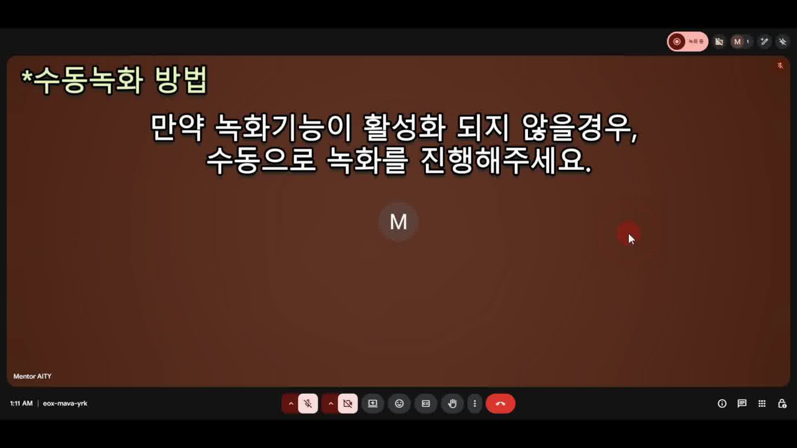
하단 더보기(⋮) 메뉴 → "녹화 관리" → "녹화 시작" → "모든 참여자에게 실시간 스트리밍 알리기" 동의 → 녹화 시작 버튼 클릭.
4수업 종료 절차 — 가장 중요
반드시 ① 녹화 중지 → ② 모든 참여자 내보내기 → ③ 통화 종료 순서로 진행하세요.
녹화를 먼저 중지하지 않으면 수업이 정상 종료되지 않으며, 다음 수업의 녹화에도 영향을 줄 수 있습니다.
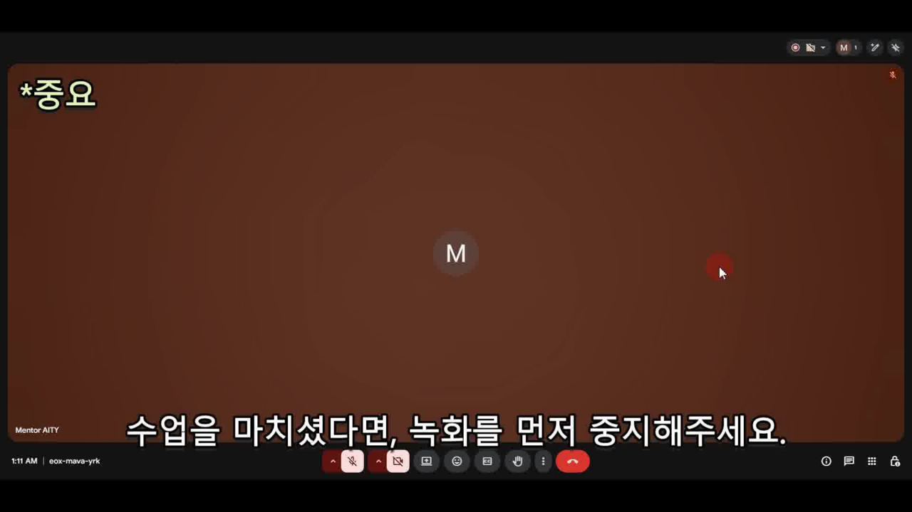
수업이 끝나면 우측 상단 빨간 점 "녹화 중"에 마우스를 올려 옵션을 펼친 후, 중지 버튼을 클릭합니다.
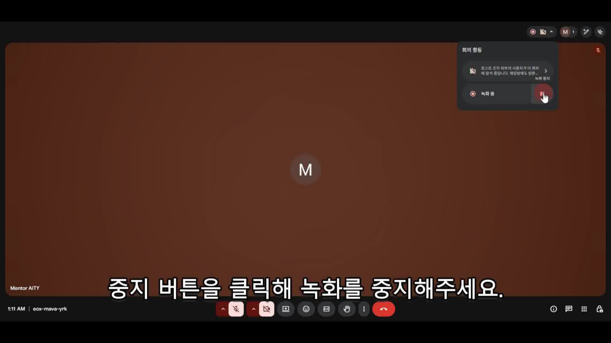
"녹화 중지됨"으로 표시가 바뀌면 OK. 이제 통화 종료 단계로 넘어갈 수 있습니다.
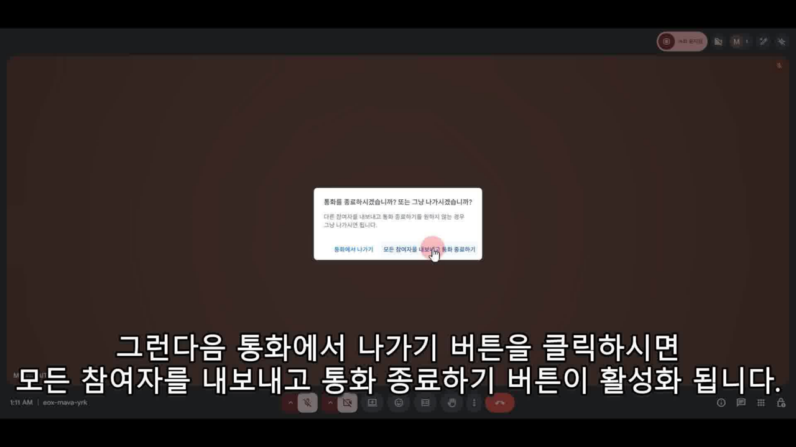
하단 빨간 통화 종료 버튼 클릭 → 팝업에서 "모든 참여자를 내보내고 통화 종료" 선택. "그냥 나가기"를 누르면 수강생들이 남아 있게 되니 반드시 첫 번째 옵션을 선택하세요.
5수강생이 보는 화면
강사가 알아야 할 학생의 경험 — 같은 클래스를 학생 시각에서 한 번 보세요.
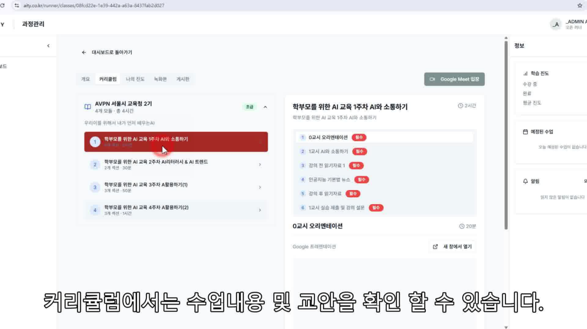
수강생은 "커리큘럼" 탭에서 회차별 모듈을 보고, 각 모듈 안의 슬라이드/실습/읽기자료를 클릭해서 학습합니다. 수업 시작 1일 전까지 자료 업로드 권장.
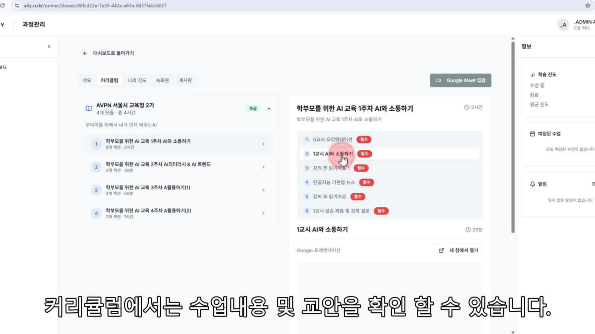
각 회차 안에 0교시 OT / 1교시 본강의 / 강의 전 읽기자료 / 강의 후 읽기자료 / 실습 제출·설문 섹션이 분리되어 있습니다. 운영팀이 사전에 골격을 만들어 두므로 강사는 각 섹션에 자료만 채워 넣으면 됩니다.
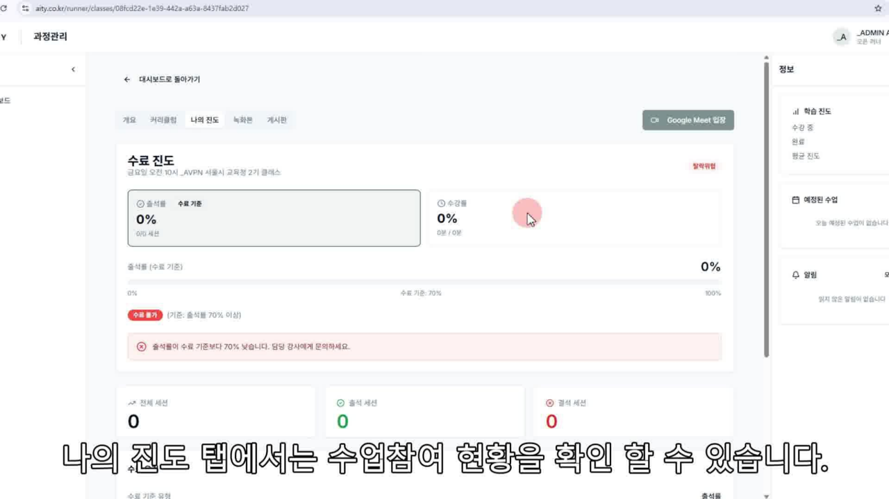
수료 기준은 출석률 70% 이상입니다. 강사의 시작·종료 시간 정확한 준수가 곧 수강생의 수료 가부를 결정합니다.
6한 페이지 요약 (체크리스트)
📋 수업 30분 전
- aity.co.kr 로그인 → 우측 상단 토글이 "강사"인지 확인
- 대시보드 → 수업 관리 → 오늘 클래스 "상세보기"
- 모듈 자료(슬라이드/실습) 업로드 완료 확인
- "Google Meet 입장" → 자동 녹화 활성화 시각적 확인
- 음성·화면 사전 테스트
🎙 수업 중
- 시작·종료 시간 정확히 준수 (출석률이 곧 수료 기준)
- 녹화 상태 시작·중간·종료 3회 시각적 체크
- 채팅 + 입말 Q&A 병행 (채팅 질문은 큰 소리로 다시 읽고 답변)
- 실습 중 30분 간격으로 막힌 수강생 점검
- 마지막 5분: 다음 회차로의 핸드오프 메모 발표
🏁 수업 종료
- ① 녹화 중지 → ② 모든 참여자 내보내기 → ③ 통화 종료 (반드시 이 순서)
- 당일 24시간 내: 게시판 미답변 질문 코멘트
- D+1 오후: 녹화본 게시 확인
- 다음 회차 강사에게 핸드오프 메모 전달 (산출물 + 미진한 부분)
- 운영진 단톡방에 "회차 종료" 한 줄 보고